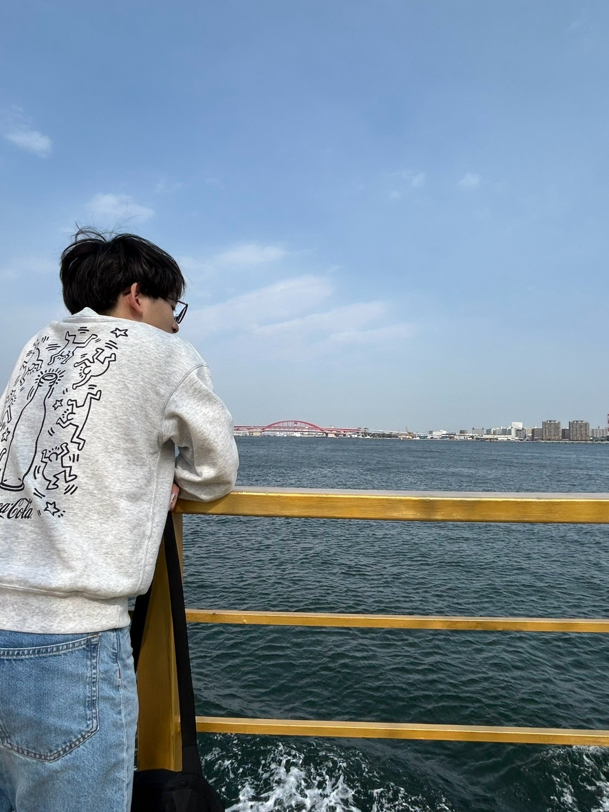

初めまして。ポートフォリオをご覧いただきありがとうございます。 同志社大学法学部在学中の小寺陸叶です。法律の知識と情報技術を組み合わせた新しい価値を創造することを目指しています。 これまで、ハッカソンや個人開発などを通して、複数のWebアプリを制作してまいりました。 現在は基本情報技術者試験の取得を目指しつつ、ReactやJSなどのフロントエンドの技術を学んでおります。 実務経験を積ませていただくことを最も重要視して考えておりますので、格安でもお仕事をお受けさせてもらえたらなと考えております。どうぞよろしくお願いいたします。
今まで、ハッカソンや個人開発を通し、以下のアプリを作ってきました。
このアプリは自分の失敗を入力することで、その失敗のやらかし度合いを点数化して、ほかのユーザーと競えるアプリです。
アプリのURL：
https://demo-app-two-pied.vercel.app/開発コードのURL：
https://github.com/po372/demo-appこのアプリは１５回の質問を通して、相手が思い浮かべているものをあてに行く、新感覚クイズゲームです。
アプリのURL：
https://naga18752025.github.io/dohack_reverse_akinator/index.html開発コードのURL：
https://github.com/naga18752025/dohack_reverse_akinator